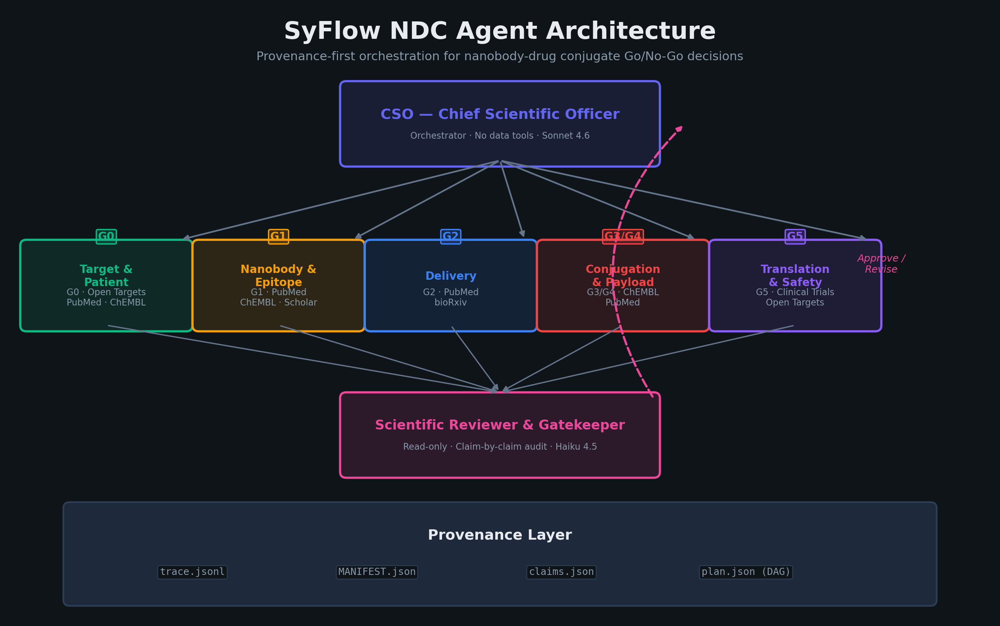
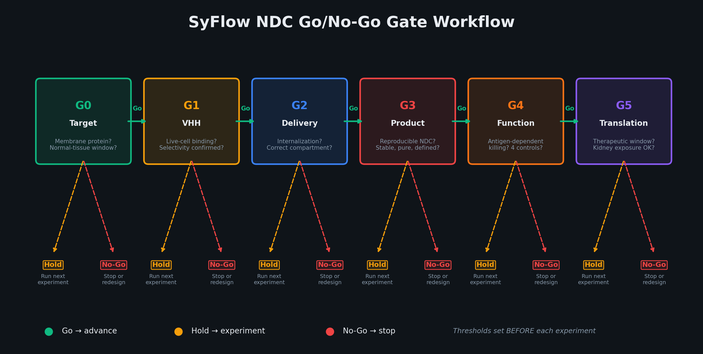
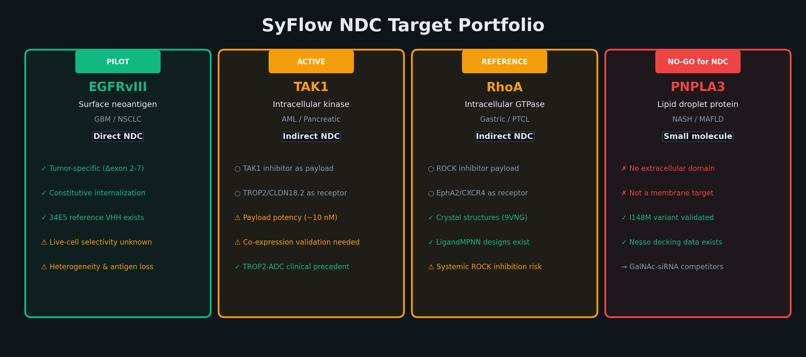
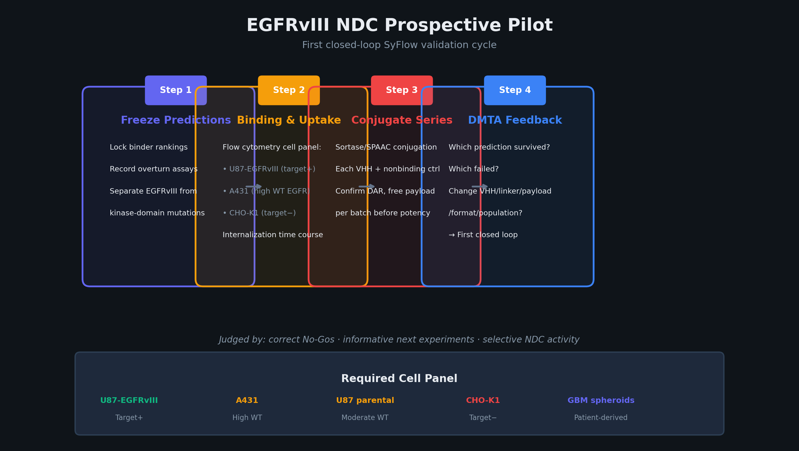

Documentation site: https://mrfeixiang.github.io/SyFlow-NDC/
The unit of work is one NDC candidate dossier: indication × surface antigen × VHH sequence × conjugation site × linker-payload × manufacturing batch. The platform adapts the review-and-audit pattern from Stanford's Virtual Biotech.
Pipeline
AGENT_REGISTRY in src/agents/registry.py registers seven agents. GATE_DEFINITIONS in src/schemas/gate.py defines six gates (G0–G5). G3 and G4 share conjugation_payload. The CSO is an orchestrator (is_orchestrator: True) and is omitted by build_specialist_agents. The scientific reviewer is read-only (Read, Glob, Grep).
python -m src validate does not call a model. It loads the dossier, writes a plan DAG, creates work/<agent>/results/task.md, and records an audit. replay prints that replay is not implemented.
flowchart TD query["Query and dossier YAML"] --> cso["CSO orchestrator<br/>no data-query tools"] cso --> plan["build_validation_plan"] plan --> g0["G0 target_patient<br/>always scheduled"] plan --> g1["G1 nanobody_epitope<br/>parallel with G0 if dossier has vhh"] g1 --> g2["G2 delivery<br/>only if is_surface_protein"] g2 --> g34["G3 product and G4 function<br/>conjugation_payload<br/>only if dossier has conjugate"] g0 --> g5["G5 translation_safety<br/>depends on every earlier step"] g1 --> g5 g2 --> g5 g34 --> g5 g5 --> rev["scientific_reviewer<br/>depends on every earlier step"] rev --> decision["Run directory initialized<br/>Go / Hold / No-Go is not auto-decided"]
Checked-in dossiers for EGFRvIII, TAK1, RhoA, and PNPLA3 have no top-level conjugate key, so validate does not schedule conjugation_payload. G3 and G4 can still be opened with gate, which reads GATE_DEFINITIONS.
| Gate | Name in code | Primary agent | No-Go triggers include |
|---|---|---|---|
| G0 | Target and Patient Selection | target_patient |
No membrane accessibility; therapeutic window implausible |
| G1 | VHH Binding and Selectivity | nanobody_epitope |
Selectivity lost on WT cells; no reproducible binding |
| G2 | Internalization and Trafficking | delivery |
No internalization; wrong trafficking compartment |
| G3 | Conjugate Identity and Stability | conjugation_payload |
Unstable or poorly defined product; high free payload |
| G4 | Antigen-Dependent Killing | conjugation_payload |
Killing tracks free payload or target-negative cells |
| G5 | Exposure and Therapeutic Window | translation_safety |
No therapeutic window; unacceptable kidney toxicity |
A parallel template with per-criterion notes lives in src/config/gates.yaml. The CLI uses the Python table, not that YAML file.
Features
- Pydantic dossier, claim, and gate schemas (
src/schemas/). - Evidence types:
prediction,literature_evidence,retrospective_analysis,syflow_wetlab,independent_replication. Wet-lab fields include ELN and LIMS batch IDs. - Claim checks against
MANIFEST.jsonandtrace.jsonl(src/utils/claims.py). - SHA-256 artifact manifest, append-only trace, DAG plan validation (cycle detection), and provenance reconstructed from the trace.
- Session audit that writes
audit.jsonand a run summary (src/utils/session_audit.py). - Provenance MCP skeleton at
src/mcp_servers/provenance_mcp/server.py.python scripts/setup_mcp.pywritesmcp_config.json. The server module documents itself as a simplified stdio skeleton. - Per-target dossiers under
targets/, plus a target registry insrc/config/targets.yamlloaded by the CLI. Supported--targetchoices are:pnpla3,rhoa,tak1,egfrviii.
Quickstart
environment.yml creates the syflow-ndc conda environment (Python 3.11 and the runtime dependencies). Install this repository in editable mode so the syflow command and python -m src resolve dossier paths from the repo root.
conda env create -f environment.yml
conda activate syflow-ndc
pip install -e ".[dev]"
cp .env.example .env # set ANTHROPIC_API_KEY if you later wire a model client
Slide builders additionally need matplotlib and python-pptx:
pip install -e ".[slides]"
Usage
syflow --help
python -m src --help
python -m src validate --target egfrviii --query "Evaluate EGFRvIII as NDC target for GBM"
python -m src gate --target egfrviii --gate G1 --dossier targets/egfrviii/dossier.yaml
python -m src verify --run-id <RUN_ID>
python -m src replay --run-id <RUN_ID>
python scripts/setup_mcp.py
python scripts/smoke_check.py
validate and gate write under SYFLOW_RUNS_DIR (default <workspace>/runs, gitignored) using ids YYYYMMDD_<target>_NNN. verify reloads that directory, re-hashes the manifest, and reconstructs provenance. replay exits after printing that it is not implemented.
scripts/evaluate_egfr_vhh.py reads design tables from the hard-coded directory /home/syslab/Desktop/AIDD SYStem and writes proteinbase_submission/. Those design inputs are not in this repository. The committed report proteinbase_submission/evaluation_report.txt records 49 candidates loaded (20 PPI-Flow EGFR WT, 19 OpenDDE/rfantibody EGFRvIII, 10 ForceFlowAb/IgLM EGFRvIII) and 20 sequences kept by the 90% identity filter in select_diverse_top20.
python scripts/create_workflow_ppt.py # writes figures/ and docs/slides/SyFlow_NDC_Workflow.pptx
python scripts/create_korean_ppt.py # writes docs/slides/SyFlow_NDC_Workflow_KR.pptx
Targets
Classifications below are taken from src/config/targets.yaml and each dossier. Gate rows are dossier gate_expectations, not measured outcomes.
| Target | Indication in the dossier | Surface protein | NDC path recorded in the dossier | CLI --target |
|---|---|---|---|---|
| EGFRvIII | GBM, NSCLC, head and neck SCC | Yes (is_surface_protein: true) |
Direct NDC; stage binder_discovery; pilot in the target registry |
egfrviii |
| TAK1 / MAP3K7 | Inflammatory cancers, AML, pancreatic cancer, KRAS-mutant tumors | No (cytoplasmic kinase) | Indirect: surface receptor plus a TAK1-inhibitor payload. G0 expectation: hold | tak1 |
| RhoA | Solid tumors with RhoA pathway activation (diffuse gastric, T-cell lymphoma) | No | Indirect via a surface receptor (EphA2, CXCR4, or integrin αvβ3). G0 expectation: hold | rhoa |
| PNPLA3 | NASH / MAFLD | No (lipid-droplet protein) | Dossier modality is small_molecule. G0 expectation: no_go_for_ndc |
pnpla3 |
targets/tnfa/ and targets/nk2r/ contain additional dossiers. They are not CLI --target choices.
Repository layout
├── src/
│ ├── cli.py # validate, gate, verify, replay
│ ├── __main__.py # python -m src
│ ├── agents/ # registry plus system prompts
│ ├── schemas/ # dossier, evidence, gates
│ ├── utils/ # trace, manifest, provenance, plan, audit, claims
│ ├── config/ # gates.yaml (reference), targets.yaml (CLI registry)
│ └── mcp_servers/ # provenance MCP skeleton
├── scripts/
│ ├── setup_mcp.py
│ ├── evaluate_egfr_vhh.py
│ ├── create_workflow_ppt.py
│ ├── create_korean_ppt.py
│ ├── smoke_check.py
│ └── build_pages.py # README → site/ for GitHub Pages
├── targets/ # per-target dossier YAML
├── proteinbase_submission/ # committed VHH submission files and evaluation report
├── figures/ # architecture and workflow PNGs
├── docs/slides/ # English and Korean decks
├── environment.yml
├── pyproject.toml
└── .claude/skills/ # evidence-citation, run-organization
Figures
Generated by scripts/create_workflow_ppt.py (five domain specialists, CSO, reviewer).




Citation
If you use this software, cite CITATION.cff.
@software{pei_2026_syflow_ndc,
author = {Pei, Syang},
title = {SyFlow NDC Go/No-Go Platform},
year = {2026},
url = {https://github.com/mrfeixiang/SyFlow-NDC},
license = {MIT}
}
Acknowledgements
Architecture adapted from Stanford's Virtual Biotech review-and-audit pattern. NDC gate definitions, the evidence-type labels, and wet-lab provenance fields in this repository are SyFlow-specific.
License
Released under the MIT License. Copyright (c) 2026 Syang Pei.
Runtime boundaries and installed paths
src/schemas/gate.py:GATE_DEFINITIONS is the current runtime source for both CLI and MCP.
src/config/gates.yaml is a non-executable reference template with differing criterion IDs,
triggers and additional evidence-type annotations. Those annotations are not enforced.
Do not switch sources without a separate scientific policy review.
The workspace is SYFLOW_PROJECT_ROOT when set, otherwise the source checkout for editable
installs, otherwise the current working directory for wheel installs. SYFLOW_RUNS_DIR
overrides the writable run location for both CLI and MCP. Dossiers are external inputs,
not bundled in the wheel: use --dossier /path/to/dossier.yaml or point
SYFLOW_PROJECT_ROOT at a workspace containing targets/. Missing or malformed inputs fail
before creating a run; they no longer silently assume a surface target.
TNF-alpha and NK2R remain outside the supported target registry: their checked-in dossiers
are binder/agonist campaigns, lack is_surface_protein, and need an agreed modality-specific
workflow before applying cytotoxic NDC gates. Adding a CLI choice alone is not validation.
validate and gate initialize pending plans only. Task files are attributed to the CLI
initializer, not to agents that never ran. verify checks recorded artifact integrity and
reconstructs records; it does not validate scientific claims or authorize a Go decision.
replay, model dispatch, automatic gate evaluation and runtime tool sandbox enforcement
are not implemented. Agent tool lists and workspace instructions are configuration only.
MIT licensing, copyright holder, package renaming, gate-source unification and additional specialist/modality architecture remain owner decisions before merge.